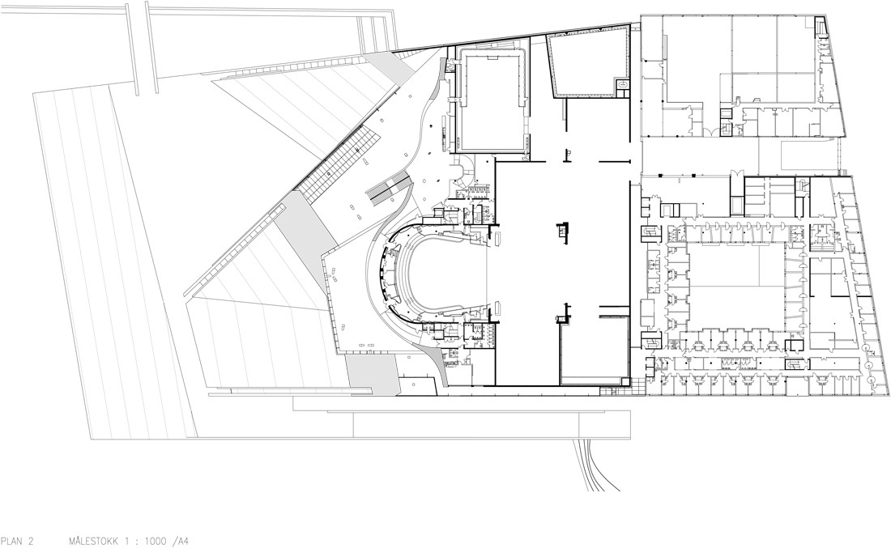
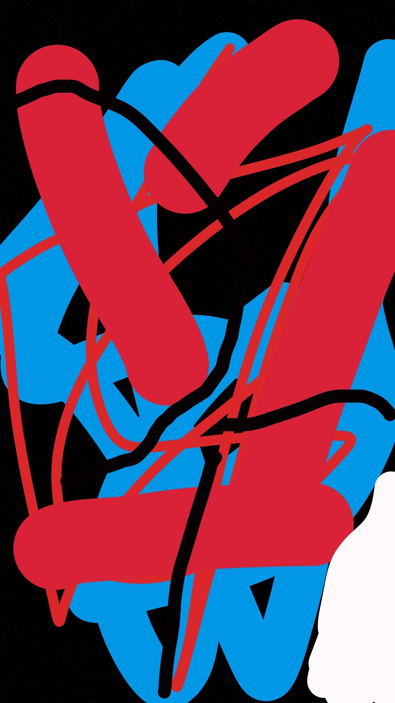

Portfolio - My feats
Introduction
Although I am just 19 years old, I am undoubtedly a man of many talents, therefore, this is just a brief introdoction to my many feats. Throughout my carreer, I have obtained great achievements in many different areas of work. This page will tell you a little about this.
Arcitecture
I have worked with major arciterure companies such as Showa Sekkei and Gensler. Alongside Snøhetta, I contributed in the design and engineering of the Oslo Opera House.
As a professional in both arciterure and engineering, My skills have always been highly requested. My time in this field of work has given me excellent expirience within teamwork and communication. I often led teams, making me more expirienced as a leader as well.
Art
Art has been a hobby of mine for a long time. It has brought me not only joy, but recognition as well. My art goes under the categoty of abstract. I have often been compared to the likes of Jean Michel Basquiat, Keith Haring and Eddie Martinez.
My work as an artist has helped me develop the creative part of my brain. I am able to see opportunities in clean slates that i wasnt able to see earlier. This translates well into my worklife, as I am able to use my creativity to always find the best and most creative solution to potential problems and projects.
Racing
I used to be a professional racecar driver for a short while. In my carreer i competed in Formula 1, Formula 2, World Rally Championship and Formula E. I competed against the likes of Lewis Hamilton, Carlos Sainz and Sebastian Vettel. My most memorable feat withing racing is placing first in "The Monaco Grand Prix" in Formula 1.

Racing has given me valuable skills within controlling stress. I am used to working in very stressful situations and remain calm. This makes me able to think clear and evaluate situations and issues clearly, no matter the surroundings and circumstances.